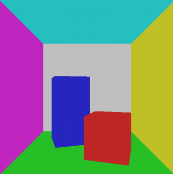

Introduction
Both Raytracer and Rasterizer are build in Visual Studio using C++ with the OpenGL mathematics (GLM) library and SDL2. The first step for both of them was to render correctly the famous Cornell Box and afterwards there are some extra additions
for each method.
Raytracer
Raytracing is a method which draws images of 3D scenes by tracing the light rays reaching the simulated camera.
- The first step is to realise how to represent objects as triangles and triangles as 3 vertices with a normal and a colour. This is a core concept of how items are stored and represented which is not only related to Raytracing but in many major
3D software the idea of how objects are stored is similarly. (Although the representation with only vertices, normal and colour is overly simplistic)
-
The core concept of Raytracing is how light bounces around in space. Raytracing is an attempt at simulating that behavior. This is done by shooting rays from the camera towards the objects in the scene and calculating the intersection of that ray with
the objects, specifically the closest intersection. By sending a ray from each pixel of the screen through the virtual camera you can get the colour value of the closest intersection for each ray which results in the image shown
in Figure 1.
